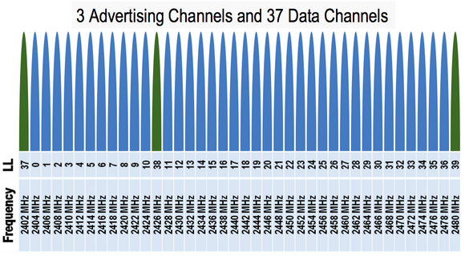
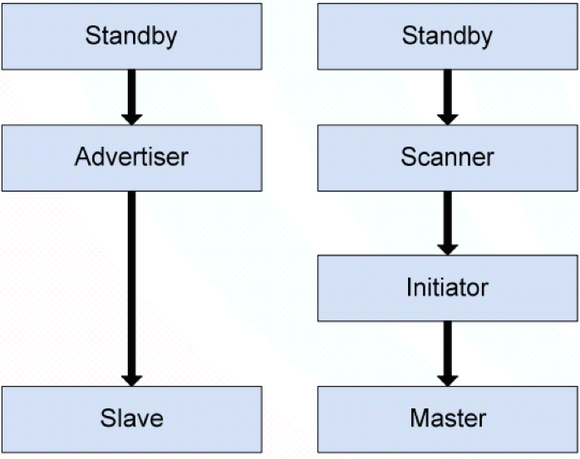
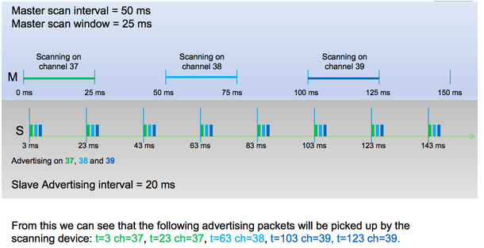
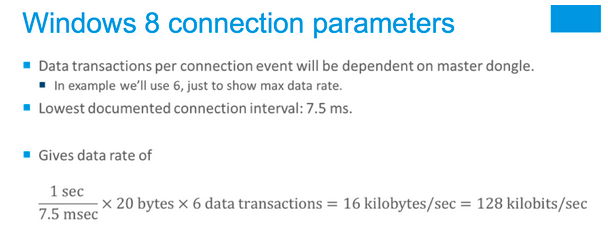
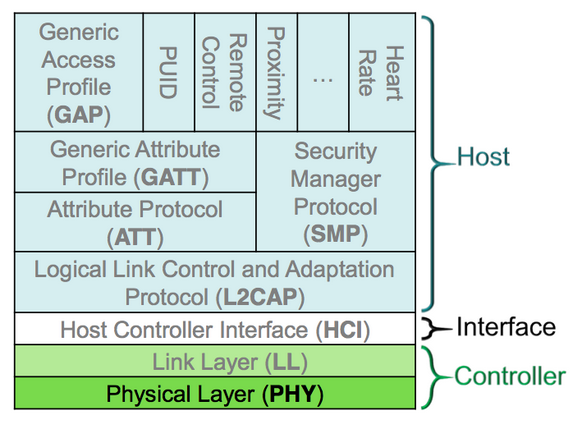
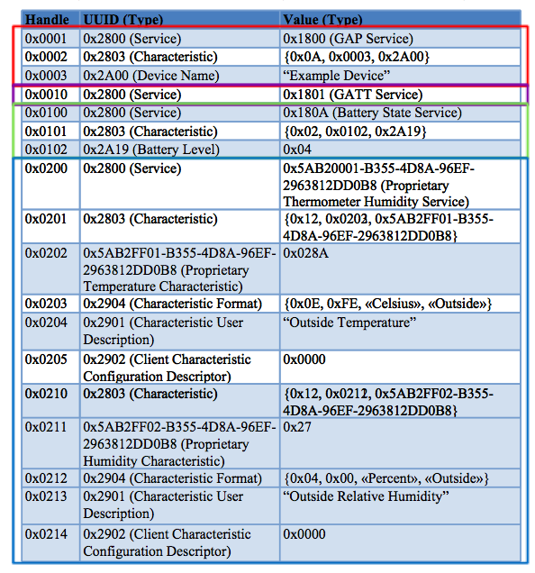

BLE基本概念
BLE物理层
RF规格特性
- 运行在2.4GHz ISM频段
- GFSK 调制方式(高斯频移键控)
- Bit-rate：1Mbit/s
广播通道
- 40个频道，2MHz的频道间隙
- 3 个固定的广播通道
- 37 个自适应自动跳频数据通道

Smaller icon
星形拓扑结构
- 主设备管理着连接,并且可以连接多个从设备
- 一个从设备只能连接一个主设备
BLE设备状态
有六种可能的状态
- 待机状态(Standby)：设备没有传输和发送数据，没有连接到任何设备
- 广播状态(Advertiser)：周期性广播状态
- 扫描状态(Scanner)：主动地寻找正在广播的设备
- 发起连接状态(Initiator)：主动向某个设备发起连接
- 主设备(Master)：已建立连接的设备，主动发起连接的一方
- 从设备(Slave) ：已建立连接的设备，被动接受连接的一方

Smaller icon
BLE广播状态
- 广播包的发送是单向的，不需要任何连接
- 广播包可以包含特定的数据定义，最大31个字节
- 广播包可以直接指向某个特定的设备，也可以不指定
- 广播中可以声明是可被连接的设备，或者是不可连接的设备
- 在一个广播事件中，广播包会分别在三个广播通道中送一次(分别是37，38，39通道)
- 广播间隔: 两次广播事件之间的最小时间间隔
- 广播间隔的取值范围是在20ms ~ 10.24s之间
- 链路层会在每次广播事件期间产生一个随机延时时间，来避免多设备之间的数据碰撞。
BLE扫描状态
- 每次扫描设备打开Radio接收器去监听广播包
- 扫描事件交替发生在三个特定的广播通道（37, 38, 39通道）
- 扫描间隔: 即扫描设备的扫描频度
- 扫描窗口: 每次扫描事件持续的时间

Smaller icon
BLE发起连接状态
- 除了扫描，设备也可以主动发起连接
- 当它监听到一个可连接的广播，发起设备会发送一个连接请求
- 连接请求包括一套为从设备准备的连接参数，安排连接事件发生的的通道和时间
- 如果广播设备接收了连接，两个设备会进入连接状态，发起方会称为主设备(Master)，广播方会称为从设备(Slave)
- BLE连接参数:
- 通道映射：指示连接使用的频道
- 跳频增量：参与通道的选择算法
- 连接间隔：即Connection Interval，1.25ms的倍数，7.5ms-4.0s之间
- 监督超时：即Slave latency，监督连接无响应的超时时间
- 从机潜伏：即Supervision timeout，从设备响应的潜伏时间

Smaller icon
BLE连接状态
- 所有的通讯都发生在两个设备的连接事件期间
- 连接事件周期地发生，按照连接参数指定的间隔
- 每个事件发生在某个数据通道(0-36)，跳频增量参数决定了下次连接事件发生的通道
- 在每个连接事件期间，Master先发送，Slave会在150us之后做出回应
- 从设备潜伏:
- Slave如果没有数据发送, 允许跳过连接事件
- 连接参数中的Slave 的潜伏值,是允许从设备跳过的最大连接次数
- 在连接事件中，如果slave没有对master的包做出回应，master会在后来的连接事件中重复发送，直到slave回应
传输数据

Smaller icon
超时断开

Smaller icon
速度计算

Smaller icon
BLE终止连接
- Master和Slave都可以主动断开连接
- 一边发起断开，另一边必须在在断开连接之前回应这个断开请求
- 监视超时而断开连接
- 监视超时参数指定了两个数据包之间的最大时间跨度
- slave和master双方都维持着自己的监视超时计时器，在每次收到数据包时清零。
- 如果连接超时，设备会认为连接丢失，并且退出连接状态，返回广播、扫描或者待机模式。
BLE协议栈
协议栈分层
- 由Controller和Host组成；
- 单芯片方案（SoC方案）：Controller、Host、Profile、Application在同一芯片中；
- 双芯片方案：Controller属于一个芯片，Host、Profile、Application属于另一个芯片（或系统）；
- HCI：Host Controller Interface
- LL：Link Layer
- L2CAP：Logical Link Control and Adaptation Protocol
- ATT：Attribute Protocol
- GATT：Generic Attribute Profile
- GAP：Generic Access Profile
- SMP：Security Manager Protocol

Smaller icon
BLE Link Layer(LL)
- 分组数据单元（PDU：packet data unit）
BLE L2CAP
- 为上层协议提供connection-oriented和connection-less的支持
- 协议复用（经典蓝牙和低功耗蓝牙共存的情况下）
- 数据的分包与组包
- 流控与重传
BLE ATT
- ATT：Attribute Protocol
- Attribute就是data
- Handle：属性在列表中的地址
- Type：说明代表什么数据，由Bluetooth SIG预定义或者是客户自己定义的UUID (universal unique identifier)
- Permissions：权限声明
- Client／Server架构
- 服务端提供数据，比如：contains attributes, receives requests, executes, responds, can indicate values
- 客户端使用数据，比如：sends requests, commands, waits for responses, can confirm indications
- 设备的服务/客户角色，不依赖于GAP层中心设备/外围设备角色，和LL层的Master/Slave角色定义，类似Socket

Smaller icon
BLE GATT
- GATT：Generic Attribute Profile
- Profile通常是由一个或多个Services组成
- 一个Service包含一个或多个Characteristic values
- Characteristic可以用descriptor来描述它的特性
- 客户端和服务端的通讯方式
- Discover Characteristic by UUID：搜索服务端设备所能提供的所有匹配UUID
- Read Characteristic Value：使用指定的handle读Characteristic
- Write Characteristic Value：使用指定的handle写Characteristic
- Notification：服务端主动向客户端报告Characteristic的变化
- Indication：客户端应用层需ACK
BLE GAP
- GAP：Generic Access Profile
- Basic requirements of a device
- Description of behaviours and methods for device discovery, connection establishment, security, authentication, association models, service discovery
- LE device roles: Peripheral, Central, etc.
BLE SMP
- SMP：Security Manager Protocol
- Just Works: Gives an unauthenticated link
- Man In The Middle protection: User enter passkey
- Out-of-Band: Uses some other way to give a key